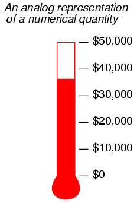
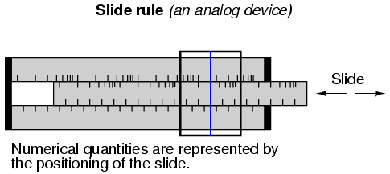
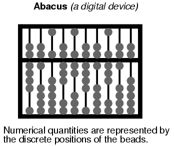
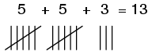

Sistemas de Numeración
"Hay tres tipos de personas: las que saben contar y las que no".
Anónimo
Números y símbolos
La expresión de cantidades numéricas es algo que tendemos a dar por sentado. Esto es tanto bueno como malo en el estudio de la electrónica. Es bueno porque estamos acostumbrados al uso y manipulación de números para los numerosos cálculos utilizados en el análisis de circuitos electrónicos. Por otro lado, el sistema particular de notación que nos han enseñado desde la escuela primaria en adelante esnotel sistema utilizado internamente en los dispositivos informáticos electrónicos modernos, y aprender cualquier sistema de notación diferente requiere un nuevo examen de suposiciones profundamente arraigadas.
Primero, tenemos que distinguir la diferencia entre números y los símbolos que usamos para representarlos. Anúmeroes una cantidad matemática, generalmente correlacionada en electrónica con una cantidad física como voltaje, corriente o resistencia. Hay muchos tipos diferentes de números. Éstos son sólo algunos tipos, por ejemplo:
WHOLE NUMBERS: 1, 2, 3, 4, 5, 6, 7, 8, 9 . . .
INTEGERS: -4, -3, -2, -1, 0, 1, 2, 3, 4 . . .
IRRATIONAL NUMBERS: π (approx. 3.1415927), e (approx. 2.718281828), square root of any prime
REAL NUMBERS: (All one-dimensional numerical values, negative and positive, including zero, whole, integer, and irrational numbers)
COMPLEX NUMBERS: 3 - j4 , 34.5 ∠ 20o
Los diferentes tipos de números encuentran diferentes aplicaciones en el mundo físico. Los números enteros funcionan bien para contar objetos discretos, como la cantidad de resistencias en un circuito. Los números enteros son necesarios cuando se requieren equivalentes negativos de números enteros. Los números irracionales son números que no se pueden expresar exactamente como la razón de dos números enteros, y la razón entre la circunferencia de un círculo perfecto y su diámetro (π) es un buen ejemplo físico de esto. Las cantidades no enteras de voltaje, corriente y resistencia con las que estamos acostumbrados a tratar en los circuitos de CC se pueden expresar como números reales, ya sea en forma fraccionaria o decimal. Sin embargo, para el análisis de circuitos de CA, los números reales no logran capturar la esencia dual de magnitud y ángulo de fase, por lo que recurrimos al uso de números complejos en forma rectangular o polar.
Si vamos a utilizar números para comprender procesos en el mundo físico, hacer predicciones científicas o equilibrar nuestras chequeras, debemos tener una manera de denotarlos simbólicamente. En otras palabras, podemos saber cuánto dinero tenemos en nuestra cuenta corriente, pero para mantener un registro necesitamos tener algún sistema diseñado para simbolizar esa cantidad en papel, o en algún otro tipo de forma para el mantenimiento de registros y el seguimiento. Hay dos formas básicas de hacer esto: analógica y digital. En la representación analógica, la cantidad se simboliza de forma infinitamente divisible. Con la representación digital, la cantidad se simboliza de una manera discretamente empaquetada.
Probablemente ya estés familiarizado con una representación analógica del dinero y no te hayas dado cuenta de lo que es. ¿Alguna vez has visto un cartel de recaudación de fondos hecho con la imagen de un termómetro, donde la altura de la columna roja indicaba la cantidad de dinero recaudado para la causa? Cuanto más dinero se recauda, más alta es la columna de tinta roja en el cartel.

Este es un ejemplo de una representación analógica de un número. No existe un límite real en cuanto a cuán finamente se puede dividir la altura de esa columna para simbolizar la cantidad de dinero en la cuenta. Cambiar la altura de esa columna es algo que se puede hacer sin cambiar la naturaleza esencial de lo que es. La longitud es una cantidad física que se puede dividir en cantidades tan pequeñas como se desee, sin límite práctico. La regla de cálculo es un dispositivo mecánico que utiliza la misma cantidad física (longitud) para representar números y para ayudar a realizar operaciones aritméticas con dos o más números a la vez. También es un dispositivo analógico.
Por otra parte, undigitalLa representación de esa misma cifra monetaria, escrita con símbolos estándar (a veces llamados cifrados), se ve así:
$35,955.38
A diferencia del cartel del "termómetro" con su columna roja, los caracteres simbólicos de arriba no se pueden dividir finamente: esa combinación particular de cifras representa una cantidad y sólo una cantidad. Si se agrega más dinero a la cuenta (+ $40,12), se deben utilizar diferentes símbolos para representar el nuevo saldo ($35.995,50), o al menos los mismos símbolos dispuestos en diferentes patrones. Este es un ejemplo de representación digital. La contraparte de la regla de cálculo (analógica) es también un dispositivo digital: el ábaco, con cuentas que se mueven hacia adelante y hacia atrás sobre varillas para simbolizar cantidades numéricas:


Comparemos estos dos métodos de representación numérica:
ANALOG DIGITAL ------------------------------------------------------------------ Intuitively understood ----------- Requires training to interpret Infinitely divisible -------------- Discrete Prone to errors of precision ------ Absolute precision
La interpretación de símbolos numéricos es algo que tendemos a dar por sentado, porque nos lo han enseñado durante muchos años. Sin embargo, si intentaras comunicar una cantidad de algo a una persona que ignora los números decimales, ¡esa persona aún podría entender el simple gráfico del termómetro!
Las comparaciones infinitamente divisibles versus discretas y de precisión son en realidad las dos caras de la misma moneda. El hecho de que la representación digital esté compuesta de símbolos individuales y discretos (dígitos decimales y cuentas de ábaco) significa necesariamente que podrá simbolizar cantidades en pasos precisos. Por otro lado, una representación analógica (como la longitud de una regla de cálculo) no se compone de pasos individuales, sino de un rango de movimiento continuo. La capacidad de una regla de cálculo para caracterizar una cantidad numérica con una resolución infinita es una compensación por la imprecisión. Si se golpea una regla de cálculo, se introducirá un error en la representación del número que se "ingresó" en ella. Sin embargo, es necesario golpear un ábaco con mucha más fuerza antes de que sus cuentas se desalojen completamente de su lugar (lo suficiente para representar un número diferente).
No malinterprete esta diferencia de precisión pensando que la representación digital es necesariamente másprecisoque analógico. El hecho de que un reloj sea digital no significa que siempre leerá la hora con mayor precisión que un reloj analógico, simplemente significa que elinterpretaciónde su exhibición es menos ambiguo.
La divisibilidad de la representación analógica frente a la digital puede aclararse aún más hablando de la representación de números irracionales. Los números como π se llaman irracionales porque no pueden expresarse exactamente como fracción de números enteros o números enteros. Aunque es posible que hayas aprendido en el pasado que la fracción 22/7 se puede utilizar para π en los cálculos, esto es sólo una aproximación. El número real "pi" no puede expresarse exactamente mediante ningún número finito o limitado de decimales. Los dígitos de π continúan para siempre:
3.1415926535897932384 . . . . .
Es posible, al menos teóricamente, establecer una regla de cálculo (o incluso una columna de termómetro) para representar perfectamente el número π, porque los símbolos analógicos no tienen un límite mínimo en cuanto al grado en que se pueden aumentar o disminuir. Si mi regla de cálculo muestra una cifra de 3,141593 en lugar de 3,141592654, puedo mover la diapositiva un poco más (o menos) para acercarla aún más. Sin embargo, con la representación digital, como con un ábaco, necesitaría barras adicionales (marcadores de posición o dígitos) para representar π con mayores grados de precisión. Un ábaco con 10 varillas simplemente no puede representar más de 10 dígitos del número π, sin importar cómo coloque las cuentas. Para representar perfectamente a π, ¡un ábaco tendría que tener un número infinito de cuentas y varillas! La desventaja, por supuesto, es la limitación práctica para ajustar y leer símbolos analógicos. En la práctica, no se puede leer la escala de una regla de cálculo hasta el décimo dígito de precisión, porque las marcas en la escala son demasiado toscas y la visión humana es demasiado limitada. Un ábaco, por otro lado, se puede configurar y leer sin ningún error de interpretación.
Además, los símbolos analógicos requieren algún tipo de estándar mediante el cual puedan compararse para una interpretación precisa. Las reglas de cálculo tienen marcas impresas a lo largo de las diapositivas para traducir la longitud en cantidades estándar. Incluso el gráfico del termómetro tiene números escritos a lo largo de su altura para mostrar cuánto dinero (en dólares) representa la columna roja para una altura determinada. Imagínese si todos intentáramos comunicar números simples entre nosotros separando nuestras manos a diferentes distancias. El número 1 podría significarse manteniendo nuestras manos a 1 pulgada de distancia, el número 2 a 2 pulgadas, y así sucesivamente. Si alguien mantuviera sus manos a 17 pulgadas de distancia para representar el número 17, ¿podrían todos los que lo rodearan interpretar de manera inmediata y precisa esa distancia como 17? Probablemente no. Algunos dirían que son cortos (15 o 16) y otros que son largos (18 o 19). ¡Por supuesto, a los pescadores que se jactan de sus capturas no les importan las sobreestimaciones en cantidad!
Quizás esta sea la razón por la que la gente generalmente se ha decidido por símbolos digitales para representar números, especialmente números enteros y enteros, que encuentran la mayor aplicación en la vida cotidiana. Usando los dedos de nuestras manos, tenemos un medio listo para simbolizar números enteros del 0 al 10. Podemos hacer marcas en papel, madera o piedra para representar las mismas cantidades con bastante facilidad:

Sin embargo, para números grandes, el sistema de numeración "marca de almohadilla" es demasiado ineficiente.
Sistemas de numeración
Los romanos idearon un sistema que supuso una mejora sustancial con respecto a las marcas de almohadilla, porque utilizaba una variedad de símbolos (ocifrados) para representar cantidades cada vez mayores. La notación para 1 es la letra mayúscula.I. La notación para 5 es la letra mayúscula.V. Otros cifrados poseen valores crecientes:
X = 10 L = 50 C = 100 D = 500 M = 1000
Si un cifrado va acompañado de otro cifrado de igual o menor valor inmediatamente a su derecha, sin ningún cifrado mayor que ese otro cifrado a la derecha de ese otro cifrado, el valor de ese otro cifrado se suma a la cantidad total. De este modo,VIIIsimboliza el número 8, yCLVIIsimboliza el número 157. Por otro lado, si un cifrado va acompañado de otro cifrado de menor valor inmediatamente a la izquierda, el valor de ese otro cifrado esrestadodesde el primero. Por lo tanto,IVsimboliza el número 4 (VmenosI), yCMsimboliza el número 900 (MmenosC). Es posible que hayas notado que las secuencias de créditos finales de la mayoría de las películas contienen un aviso con la fecha de producción, en números romanos. Para el año 1987, diría:MCMLXXXVII. Dividamos este número en sus partes constituyentes, de izquierda a derecha:
M = 1000 + CM = 900 + L = 50 + XXX = 30 + V = 5 + II = 2
¿No te alegra que no utilicemos este sistema de numeración? Los números grandes son muy difíciles de denotar de esta manera, y la combinación de valores izquierda versus derecha / resta versus suma también puede ser muy confusa. Otro problema importante de este sistema es que no existe ninguna posibilidad de representar el número cero o los números negativos, ambos conceptos muy importantes en matemáticas. La cultura romana, sin embargo, era más pragmática con respecto a las matemáticas que la mayoría, y optó por desarrollar su sistema de numeración sólo en la medida en que fuera necesario para su uso en la vida diaria.
Una de las ideas más importantes en numeración se la debemos a los antiguos babilonios, quienes fueron los primeros (hasta donde sabemos) en desarrollar el concepto de posición de cifrado, o valor posicional, para representar números más grandes. En lugar de inventar nuevos cifrados para representar números mayores, como hicieron los romanos, reutilizaron los mismos cifrados, colocándolos en diferentes posiciones de derecha a izquierda. Nuestro propio sistema de numeración decimal utiliza este concepto, con sólo diez cifras (0, 1, 2, 3, 4, 5, 6, 7, 8 y 9) utilizadas en posiciones "ponderadas" para representar números muy grandes y muy pequeños.
Cada cifrado representa una cantidad entera y cada lugar de derecha a izquierda en la notación representa una constante multiplicadora, opeso, para cada cantidad entera. Por ejemplo, si vemos la notación decimal "1206", sabemos que se puede descomponer en sus productos de peso constituyentes como tales:
1206 = 1000 + 200 + 6 1206 = (1 x 1000) + (2 x 100) + (0 x 10) + (6 x 1)
Cada cifrado se llamadígitoen el sistema de numeración decimal, y cada peso, ovalor posicional, es diez veces mayor que el de la derecha inmediata. Entonces, tenemos ununoslugar, undecenaslugar, uncientoslugar, unmileslugar, y así sucesivamente, de derecha a izquierda.
Ahora mismo probablemente te estés preguntando por qué me esfuerzo en describir lo obvio. ¿Quién necesita que le digan cómo funciona la numeración decimal, después de haber estudiado matemáticas tan avanzadas como álgebra y trigonometría? La razón es comprender mejor otros sistemas de numeración, conociendo primero el cómo y el por qué del que ya estás acostumbrado.
El sistema de numeración decimal utiliza diez cifras y pesos posicionales que son múltiplos de diez. ¿Qué pasaría si hiciéramos un sistema de numeración con la misma estrategia de lugares ponderados, excepto con menos o más cifras?
El sistema de numeración binaria es uno de esos sistemas. En lugar de diez símbolos de cifrado diferentes, donde cada constante de peso es diez veces mayor que la anterior, sólo tenemostwosímbolos de cifrado, y cada constante de peso esdos vecestanto como el anterior. Los dos símbolos de cifrado permitidos para el sistema binario de numeración son "1" y "0", y estos cifrados están ordenados de derecha a izquierda en valores que duplican el peso. El lugar más a la derecha es elunoslugar, al igual que con la notación decimal. Siguiendo hacia la izquierda tenemos eldoslugar, elcuatrolugar, elochoslugar, eldieciséislugar, etcétera. Por ejemplo, el siguiente número binario se puede expresar, al igual que el número decimal 1206, como la suma de cada valor de cifrado multiplicado por su respectiva constante de peso:
11010 = 2 + 8 + 16 = 26 11010 = (1 x 16) + (1 x 8) + (0 x 4) + (1 x 2) + (0 x 1)
Esto puede resultar bastante confuso, ya que escribí un número con numeración binaria (11010) y luego mostré sus valores posicionales y el total en forma de numeración decimal estándar (16 + 8 + 2 = 26). En el ejemplo anterior, mezclamos dos tipos diferentes de notación numérica. Para evitar confusiones innecesarias, debemos indicar qué forma de numeración utilizamos cuando escribimos (¡o tecleamos!). Normalmente, esto se hace en forma de subíndice, con un "2" para binario y un "10" para decimal, por lo que el número binario 110102es igual al numero decimal 2610.
Los subíndices no son símbolos de operaciones matemáticas como lo son los superíndices (exponentes). Lo único que hacen es indicar qué sistema de numeración utilizamos cuando escribimos estos símbolos para que otras personas los lean. Si ves "310", todo esto significa es el número tres escrito usandodecimalnumeración. Sin embargo, si ve "310", esto significa algo completamente diferente: tres elevado a la décima potencia (59,049). Como de costumbre, si no se muestra ningún subíndice, se supone que los cifrados representan un número decimal.
Comúnmente, el número de tipos de cifrado (y por lo tanto, el multiplicador del valor posicional) utilizados en un sistema de numeración se denomina número de ese sistema.base. Al binario se le conoce como numeración de "base dos" y al decimal como "base diez". Además, nos referimos a cada posición de cifrado en binario comobiten lugar de la palabra familiardígitoutilizado en el sistema decimal.
Ahora bien, ¿por qué alguien usaría numeración binaria? El sistema decimal, con sus diez cifras, tiene mucho sentido, ya que tenemos diez dedos para contar entre las dos manos. (Es interesante que algunas culturas antiguas de América Central usaban sistemas de numeración con una base de veinte. ¡¡Presumiblemente, usaban los dedos de las manos y de los pies para contar!!). Pero la razón principal por la que se utiliza el sistema de numeración binaria en las computadoras electrónicas modernas es la facilidad de representar dos estados de cifrado (0 y 1) electrónicamente. Con circuitos relativamente simples, podemos realizar operaciones matemáticas con números binarios representando cada bit de los números mediante un circuito que está encendido (con corriente) o apagado (sin corriente). Al igual que el ábaco, en el que cada varilla representa otro dígito decimal, simplemente agregamos más circuitos para obtener más bits para simbolizar números más grandes. La numeración binaria también se presta bien al almacenamiento y recuperación de información numérica: en cintas magnéticas (manchas de óxido de hierro en la cinta que están magnetizadas para un "1" binario o desmagnetizadas para un "0" binario), discos ópticos (un hoyo quemado con láser en el papel de aluminio que representa un "1" binario y un punto sin quemar que representa un "0" binario), o una variedad de otros tipos de medios.
Antes de pasar a aprender exactamente cómo se hace todo esto en los circuitos digitales, debemos familiarizarnos más con los sistemas de numeración binarios y otros sistemas asociados.
Numeración decimal frente a binaria
Contemos de cero a veinte usando cuatro tipos diferentes de sistemas de numeración: marcas de almohadilla, números romanos, decimal y binario:
System: Hash Marks Roman Decimal Binary ------- ---------- ----- ------- ------ Zero n/a n/a 0 0 One | I 1 1 Two || II 2 10 Three ||| III 3 11 Four |||| IV 4 100 Five /|||/ V 5 101 Six /|||/ | VI 6 110 Seven /|||/ || VII 7 111 Eight /|||/ ||| VIII 8 1000 Nine /|||/ |||| IX 9 1001 Ten /|||/ /|||/ X 10 1010 Eleven /|||/ /|||/ | XI 11 1011 Twelve /|||/ /|||/ || XII 12 1100 Thirteen /|||/ /|||/ ||| XIII 13 1101 Fourteen /|||/ /|||/ |||| XIV 14 1110 Fifteen /|||/ /|||/ /|||/ XV 15 1111 Sixteen /|||/ /|||/ /|||/ | XVI 16 10000 Seventeen /|||/ /|||/ /|||/ || XVII 17 10001 Eighteen /|||/ /|||/ /|||/ ||| XVIII 18 10010 Nineteen /|||/ /|||/ /|||/ |||| XIX 19 10011 Twenty /|||/ /|||/ /|||/ /|||/ XX 20 10100
Ni las almohadillas ni el sistema romano son muy prácticos para simbolizar números grandes. Obviamente, los sistemas de ponderación posicional como el decimal y el binario son más eficientes para la tarea. Sin embargo, observe cuánto más corta es la notación decimal que la notación binaria, para el mismo número de cantidades. Lo que se necesitan cinco bits en notación binaria sólo se necesitan dos dígitos en notación decimal.
Esto plantea una pregunta interesante con respecto a los diferentes sistemas de numeración: ¿qué tamaño de un número se puede representar con un número limitado de posiciones o lugares de cifrado? Con el crudo sistema de marcas hash, el número de lugares ES el número más grande que se puede representar, ya que se requiere un "lugar" de marca hash para cada paso de un entero. Sin embargo, para los sistemas de numeración ponderados por lugares, la respuesta se encuentra tomando la base del sistema de numeración (10 para decimal, 2 para binario) y elevándola a la potencia del número de lugares. Por ejemplo, 5 dígitos en un sistema de numeración decimal pueden representar 100.000 valores de números enteros diferentes, del 0 al 99.999 (10 elevado a la quinta potencia = 100.000). 8 bits en un sistema de numeración binario pueden representar 256 valores numéricos enteros diferentes, de 0 a 11111111 (binario) o de 0 a 255 (decimal), porque 2 elevado a la octava potencia equivale a 256. Con cada posición adicional en el campo numérico, la capacidad para representar números aumenta en un factor de la base (10 para decimal, 2 para binario).
Una nota a pie de página interesante para este tema es la de las primeras computadoras digitales electrónicas, la Eniac. Los diseñadores de Eniac optaron por representar números en forma decimal, digitalmente, utilizando una serie de circuitos llamados "contadores de anillos" en lugar de simplemente utilizar el sistema de numeración binario, en un esfuerzo por minimizar la cantidad de circuitos necesarios para representar y calcular números muy grandes. Este enfoque resultó contraproducente y, desde entonces, prácticamente todas las computadoras digitales han tenido un diseño puramente binario.
Para convertir un número en numeración binaria a su equivalente en forma decimal, lo único que hay que hacer es calcular la suma de todos los productos de bits con sus respectivas constantes de peso posicional. Para ilustrar:
Convert 110011012 to decimal form: bits = 1 1 0 0 1 1 0 1 . - - - - - - - - weight = 1 6 3 1 8 4 2 1 (in decimal 2 4 2 6 notation) 8
El bit del extremo derecho se llama bit menos significativo (LSB), porque ocupa el lugar del peso más bajo (el lugar de las unidades). El bit en el extremo izquierdo se llama Bit Más Significativo (MSB), porque se encuentra en el lugar de mayor peso (el lugar de los ciento veintiocho). Recuerde, un valor de bit de "1" significa que el peso de posición respectivo se suma al valor total, y un valor de bit de "0" significa que el peso de posición respectivo nonotse suman al valor total. Con el ejemplo anterior, tenemos:
12810 + 6410 + 810 + 410 + 110 = 20510
Si encontramos un número binario con un punto (.), llamado "punto binario" en lugar de punto decimal, seguimos el mismo procedimiento, dándonos cuenta de que cada peso a la derecha del punto es la mitad del valor del que está a la izquierda (así como cada peso a la derecha de undecimalpunto es una décima parte del peso del que está a su izquierda). Por ejemplo:
Convert 101.0112 to decimal form: . bits = 1 0 1 . 0 1 1 . - - - - - - - weight = 4 2 1 1 1 1 (in decimal / / / notation) 2 4 8
410 + 110 + 0.2510 + 0.12510 = 5.37510
Numeración octal y hexadecimal
Debido a que la numeración binaria requiere tantos bits para representar números relativamente pequeños en comparación con la economía del sistema decimal, analizar los estados numéricos dentro de los circuitos electrónicos digitales puede ser una tarea tediosa. Los programadores de computadoras que diseñan secuencias de códigos numéricos que instruyen a una computadora qué hacer tendrían una tarea muy difícil si se les obligara a trabajar únicamente con largas cadenas de unos y ceros, el "lenguaje nativo" de cualquier circuito digital. Para que a los ingenieros, técnicos y programadores humanos les resulte más fácil "hablar" este lenguaje del mundo digital, se han creado otros sistemas de numeración ponderada que son muy fáciles de convertir hacia y desde binario.
Uno de esos sistemas de numeración se llamaoctal, porque es un sistema de ponderación posicional con base ocho. Los cifrados válidos incluyen los símbolos 0, 1, 2, 3, 4, 5, 6 y 7. El peso de cada lugar difiere del que está al lado en un factor de ocho.
Otro sistema se llamahexadecimal, porque es un sistema ponderado por posición con una base de dieciséis. Los cifrados válidos incluyen los símbolos decimales normales 0, 1, 2, 3, 4, 5, 6, 7, 8 y 9, más seis caracteres alfabéticos A, B, C, D, E y F, para hacer un total de dieciséis. Como ya habrás adivinado, el peso de cada lugar difiere del anterior en un factor de dieciséis.
Contemos nuevamente de cero a veinte usando decimal, binario, octal y hexadecimal para contrastar estos sistemas de numeración:
Number Decimal Binary Octal Hexadecimal ------ ------- ------- ----- ----------- Zero 0 0 0 0 One 1 1 1 1 Two 2 10 2 2 Three 3 11 3 3 Four 4 100 4 4 Five 5 101 5 5 Six 6 110 6 6 Seven 7 111 7 7 Eight 8 1000 10 8 Nine 9 1001 11 9 Ten 10 1010 12 A Eleven 11 1011 13 B Twelve 12 1100 14 C Thirteen 13 1101 15 D Fourteen 14 1110 16 E Fifteen 15 1111 17 F Sixteen 16 10000 20 10 Seventeen 17 10001 21 11 Eighteen 18 10010 22 12 Nineteen 19 10011 23 13 Twenty 20 10100 24 14
Los sistemas de numeración octal y hexadecimal no tendrían sentido si no fuera por su capacidad de convertirse fácilmente hacia y desde notación binaria. Su propósito principal es servir como un método "taquigráfico" para denotar un número representado electrónicamente en forma binaria. Debido a que las bases de octal (ocho) y hexadecimal (dieciséis) son incluso múltiplos de la base del binario (dos), los bits binarios se pueden agrupar y convertir directamente hacia o desde sus respectivos dígitos octales o hexadecimales. Con octal, los bits binarios se agrupan en tres (porque 23= 8), y con hexadecimal, los bits binarios se agrupan de cuatro (porque 24= 16):
BINARY TO OCTAL CONVERSION Convert 10110111.12 to octal: . . implied zero implied zeros . | || . 010 110 111 100 Convert each group of bits ### ### ### . ### to its octal equivalent: 2 6 7 4 . Answer: 10110111.12 = 267.48
Tuvimos que agrupar los bits de tres en tres, desde el punto binario a la izquierda y desde el punto binario a la derecha, añadiendo ceros (implícitos) según fuera necesario para formar grupos completos de 3 bits. Cada dígito octal se tradujo de los grupos binarios de 3 bits. La conversión de binario a hexadecimal es muy parecida:
BINARY TO HEXADECIMAL CONVERSION Convert 10110111.12 to hexadecimal: . . implied zeros . ||| . 1011 0111 1000 Convert each group of bits ---- ---- . ---- to its hexadecimal equivalent: B 7 8 . Answer: 10110111.12 = B7.816
Aquí tuvimos que agrupar los bits en cuatro, desde el punto binario izquierdo y desde el punto binario derecho, agregando ceros (implícitos) según sea necesario para hacer grupos completos de 4 bits:
Del mismo modo, la conversión de octal o hexadecimal a binario se realiza tomando cada dígito octal o hexadecimal y convirtiéndolo a su grupo binario equivalente (3 o 4 bits), luego juntando todos los grupos de bits binarios.
Por cierto, la notación hexadecimal es más popular, porque las agrupaciones de bits binarios en los equipos digitales suelen ser múltiplos de ocho (8, 16, 32, 64 y 128 bits), que también son múltiplos de 4. El octal, al estar basado en grupos de bits binarios de 3, no funciona de manera uniforme con esos tamaños de grupos de bits comunes.
Conversión de octal y hexadecimal a decimal
Aunque la intención principal de los sistemas de numeración octal y hexadecimal es la representación "taquigráfica" de números binarios en la electrónica digital, a veces tenemos la necesidad de convertir cualquiera de esos sistemas a la forma decimal. Por supuesto, podríamos simplemente convertir el formato hexadecimal u octal a binario, y luego convertir de binario a decimal, ya que ya sabemos hacer ambas cosas, pero también podemos convertir directamente.
Dado que el octal es un sistema de numeración de base ocho, cada valor de peso posicional difiere de cualquier lugar adyacente en un factor de ocho. Por ejemplo, el número octal 245,37 se puede descomponer en valores posicionales como estos:
octal digits = 2 4 5 . 3 7 . - - - - - - weight = 6 8 1 1 1 (in decimal 4 / / notation) 8 6 . 4
El valor decimal de cada peso posicional octal multiplicado por su respectivo multiplicador de cifrado se puede determinar de la siguiente manera:
(2 x 6410) + (4 x 810) + (5 x 110) + (3 x 0.12510) + (7 x 0.01562510) = 165.48437510
La técnica para convertir la notación hexadecimal a decimal es la misma, excepto que cada peso posicional sucesivo cambia en un factor de dieciséis. Simplemente indique el peso de cada dígito, multiplique el valor de cada dígito hexadecimal por su peso respectivo (en forma decimal) y luego sume todos los valores decimales para obtener un total. Por ejemplo, el número hexadecimal 30F.A916se puede convertir así:
hexadecimal digits = 3 0 F . A 9 . - - - - - - weight = 2 1 1 1 1 (in decimal 5 6 / / notation) 6 1 2 . 6 5 . 6
(3 x 25610) + (0 x 1610) + (15 x 110) + (10 x 0.062510) + (9 x 0.0039062510) = 783.6601562510
Estas técnicas básicas se pueden utilizar para convertir una notación numérica deanybase a forma decimal, si conoce el valor de la base de ese sistema de numeración.
Conversión desde numeración decimal
Debido a que los sistemas de numeración octal y hexadecimal tienen bases que son múltiplos de binario (base 2), la conversión entre hexadecimal u octal y binario es muy fácil. Además, debido a que estamos muy familiarizados con el sistema decimal, convertir binario, octal o hexadecimal a decimal es relativamente fácil (simplemente sume los productos de los valores cifrados y los pesos posicionales). Sin embargo, la conversión de decimal a cualquiera de estos "extraños" sistemas de numeración es un asunto diferente.
El método que probablemente tendrá más sentido es el método de "prueba y ajuste", en el que se intenta "ajustar" la notación binaria, octal o hexadecimal al valor deseado representado en forma decimal. Por ejemplo, digamos que quiero representar el valor decimal de 87 en forma binaria. Comencemos dibujando un campo numérico binario, completo con valores de peso posicional:
. . - - - - - - - - weight = 1 6 3 1 8 4 2 1 (in decimal 2 4 2 6 notation) 8
Bueno, sabemos que no tendremos un bit "1" en el lugar de 128, porque eso inmediatamente nos daría un valor mayor que 87. Sin embargo, dado que el siguiente peso a la derecha (64) es menor que 87, sabemos que debemos tener un "1" allí.
. 1 . - - - - - - - Decimal value so far = 6410 weight = 6 3 1 8 4 2 1 (in decimal 4 2 6 notation)
Si tuviéramos que convertir el siguiente lugar a la derecha en "1" también, nuestro valor total sería 6410+ 3210, o 9610. Esto es mayor que 87.10, entonces sabemos que este bit debe ser un "0". Si hacemos que el siguiente bit de posición (16) sea igual a "1", esto lleva nuestro valor total a 64.10+ 1610, o 8010, que está más cerca de nuestro valor deseado (8710) sin excederlo:
. 1 0 1 . - - - - - - - Decimal value so far = 8010 weight = 6 3 1 8 4 2 1 (in decimal 4 2 6 notation)
Si continuamos con esta progresión, configurando cada bit de menor peso según necesitemos para llegar al valor total deseado sin excederlo, eventualmente llegaremos a la cifra correcta:
. 1 0 1 0 1 1 1 . - - - - - - - Decimal value so far = 8710 weight = 6 3 1 8 4 2 1 (in decimal 4 2 6 notation)
Esta estrategia de prueba y ajuste también funcionará con conversiones octales y hexadecimales. Tomemos la misma cifra decimal, 87.10y convertirlo a numeración octal:
. . - - - weight = 6 8 1 (in decimal 4 notation)
Si ponemos un cifrado de "1" en lugar del 64, tendríamos un valor total de 6410(menos de 8710). Si ponemos un cifrado de "2" en lugar de 64, tendríamos un valor total de 12810(mayor que 8710). Esto nos dice que nuestra numeración octal debe comenzar con un "1" en el lugar del 64:
. 1 . - - - Decimal value so far = 6410 weight = 6 8 1 (in decimal 4 notation)
Ahora, necesitamos experimentar con valores de cifrado en lugar de los 8 para intentar obtener un valor total (decimal) lo más cercano posible a 87 sin excederlo. Al probar las primeras opciones de cifrado, obtenemos:
"1" = 6410 + 810 = 7210 "2" = 6410 + 1610 = 8010 "3" = 6410 + 2410 = 8810
Un valor cifrado de "3" en lugar del 8 nos colocaría por encima del total deseado de 8710, ¡entonces "2" es!
. 1 2 . - - - Decimal value so far = 8010 weight = 6 8 1 (in decimal 4 notation)
Ahora, todo lo que necesitamos para hacer un total de 87 es un código de "7" en lugar de los 1:
. 1 2 7 . - - - Decimal value so far = 8710 weight = 6 8 1 (in decimal 4 notation)
Por supuesto, si estuviste prestando atención durante la última sección sobre conversiones octal/binaria, te darás cuenta de que podemos tomar la representación binaria de (decimal) 8710, que previamente determinamos que era 10101112y convertirlo fácilmente a octal para comprobar nuestro trabajo:
. Implied zeros . || . 001 010 111 Binary . — --- — . 1 2 7 Octal . Answer: 10101112 = 1278
¿Podemos hacer la conversión de decimal a hexadecimal de la misma manera? Claro, pero ¿quién querría hacerlo? Este método es sencillo de entender, pero laborioso de realizar. Hay otra forma de realizar estas conversiones, que es esencialmente la misma (matemáticamente), pero más fácil de realizar.
Este otro método utiliza ciclos repetidos de división (usando notación decimal) para dividir la numeración decimal en múltiplos de valores de peso posicional binarios, octales o hexadecimales. En el primer ciclo de división, tomamos el número decimal original y lo dividimos por la base del sistema de numeración al que estamos convirtiendo (binario=2 octal=8, hexadecimal=16). Luego, tomamos la porción entera del resultado de la división (cociente) y la dividimos nuevamente por el valor base, y así sucesivamente, hasta que terminemos con un cociente menor que 1. Los dígitos binarios, octales o hexadecimales están determinados por los "restos" que quedan en cada paso de la división. Veamos cómo funciona esto para binario, con el ejemplo decimal de 87.10:
. 87 Divide 87 by 2, to get a quotient of 43.5 . — = 43.5 Division "remainder" = 1, or the < 1 portion . 2 of the quotient times the divisor (0.5 x 2) . . 43 Take the whole-number portion of 43.5 (43) . — = 21.5 and divide it by 2 to get 21.5, or 21 with . 2 a remainder of 1 . . 21 And so on . . . remainder = 1 (0.5 x 2) . — = 10.5 . 2 . . 10 And so on . . . remainder = 0 . — = 5.0 . 2 . . 5 And so on . . . remainder = 1 (0.5 x 2) . — = 2.5 . 2 . . 2 And so on . . . remainder = 0 . — = 1.0 . 2 . . 1 . . . until we get a quotient of less than 1 . — = 0.5 remainder = 1 (0.5 x 2) . 2
Los bits binarios se ensamblan a partir de los restos de los sucesivos pasos de división, comenzando con el LSB y continuando hasta el MSB. En este caso llegamos a una notación binaria de 1010111.2. Cuando dividimos entre 2, siempre obtendremos un cociente que termina en ".0" o ".5", es decir, un resto de 0 o 1. Como se dijo antes, esta técnica de conversión de división repetida funcionará para sistemas de numeración distintos del binario. Si tuviéramos que realizar divisiones sucesivas usando un número diferente, como por ejemplo 8 para la conversión a octal, necesariamente obtendríamos restos entre 0 y 7. Intentemos esto con el mismo número decimal, 87.10:
. 87 Divide 87 by 8, to get a quotient of 10.875 . — = 10.875 Division "remainder" = 7, or the < 1 portion . 8 of the quotient times the divisor (.875 x 8) . . 10 . — = 1.25 Remainder = 2 . 8 . . 1 . — = 0.125 Quotient is less than 1, so we'll stop here. . 8 Remainder = 1 . . RESULT: 8710 = 1278
También podemos utilizar una técnica similar para convertir sistemas de numeración que tratan con cantidades menores que 1. Para convertir un número decimal menor que 1 a binario, octal o hexadecimal, utilizamos la multiplicación repetida, tomando la porción entera del producto en cada paso como el siguiente dígito de nuestro número convertido. Usemos el número decimal 0.812510como ejemplo, convirtiendo a binario:
. 0.8125 x 2 = 1.625 Integer portion of product = 1 . . 0.625 x 2 = 1.25 Take < 1 portion of product and remultiply . Integer portion of product = 1 . . 0.25 x 2 = 0.5 Integer portion of product = 0 . . 0.5 x 2 = 1.0 Integer portion of product = 1 . Stop when product is a pure integer . (ends with .0) . . RESULT: 0.812510 = 0.11012
Al igual que con el proceso de división repetida de números enteros, cada paso nos da el siguiente dígito (o bit) más alejado del "punto". Con números enteros (división), trabajamos del LSB al MSB (de derecha a izquierda), pero con la multiplicación repetida, trabajamos de izquierda a derecha. Para convertir un número decimal mayor que 1, con un componente < 1, debemos usarambostécnicas, una a la vez. Tome el ejemplo decimal de 54,40625.10, convirtiendo a binario:
REPEATED DIVISION FOR THE INTEGER PORTION: . . 54 . — = 27.0 Remainder = 0 . 2 . . 27 . — = 13.5 Remainder = 1 (0.5 x 2) . 2 . . 13 . — = 6.5 Remainder = 1 (0.5 x 2) . 2 . . 6 . — = 3.0 Remainder = 0 . 2 . . 3 . — = 1.5 Remainder = 1 (0.5 x 2) . 2 . . 1 . — = 0.5 Remainder = 1 (0.5 x 2) . 2 . PARTIAL ANSWER: 5410 = 1101102
REPEATED MULTIPLICATION FOR THE < 1 PORTION: . . 0.40625 x 2 = 0.8125 Integer portion of product = 0 . . 0.8125 x 2 = 1.625 Integer portion of product = 1 . . 0.625 x 2 = 1.25 Integer portion of product = 1 . . 0.25 x 2 = 0.5 Integer portion of product = 0 . . 0.5 x 2 = 1.0 Integer portion of product = 1 . . PARTIAL ANSWER: 0.4062510 = 0.011012 . . COMPLETE ANSWER: 5410 + 0.4062510 = 54.4062510 . . 1101102 + 0.011012 = 110110.011012
Lecciones en circuitos eléctricoscopyright (C) 2000-2023 Tony R. Kuphaldt, según los términos y condiciones delCC BY License.